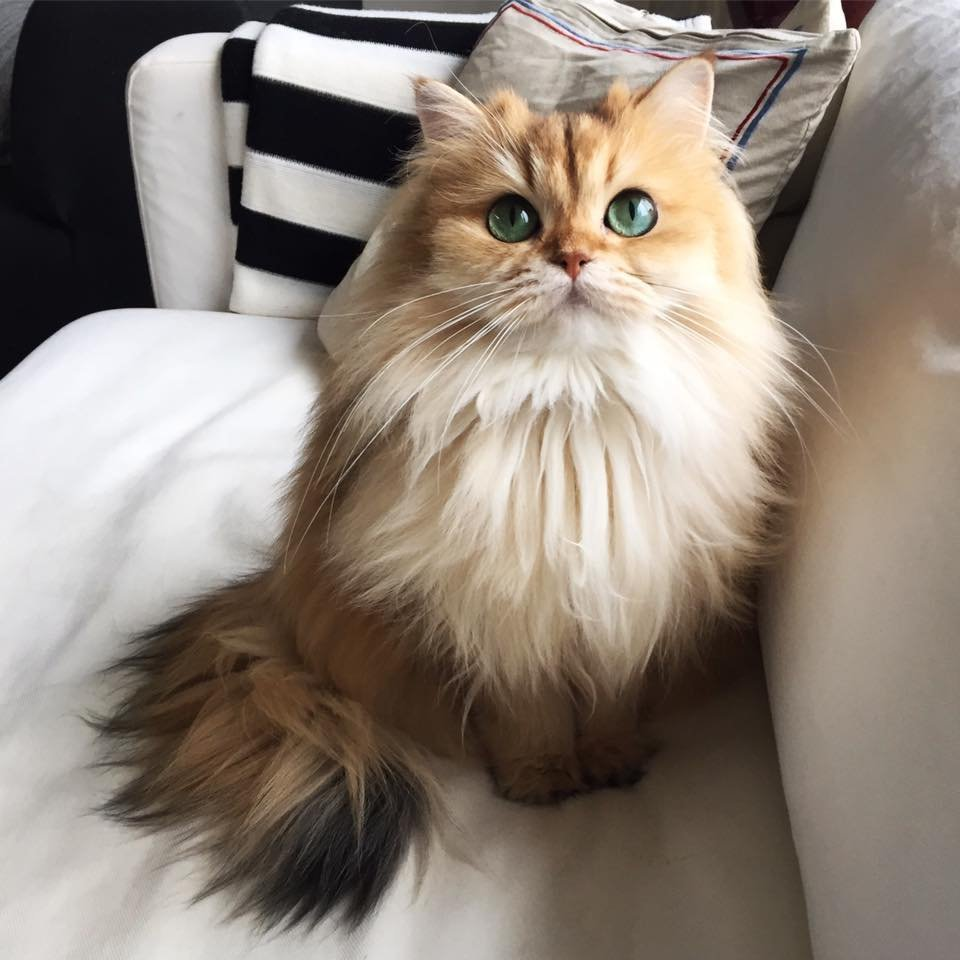

1. Каждый хозяин
кошки знает, что
кошки любят спать, но многие не догадываются сколько именно спят
кошки. По подсчетам
кошки проводят 70 % жизни во сне.

2. Люди не могут пить морскую воду, а кошки могут. Их почки фильтруют соль.
3. У кошек видоизменилась интонация голоса, чтобы они смогли общаться с людьми. Более того, считается, что чем больше вы говорите с кошкой, тем больше кошка будет отвечать вам (мяукать в ответ).
4. У кошек намагниченные клетки мозга, которые действуют как компасы, позволяя им легко находить дорогу домой.
5. Домашние кошки бегают со скоростью 48 км в час, и это на 5 км быстрее, чем у самого быстрого человека Усейна Болта (43 км в час).